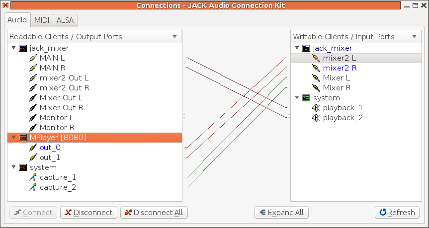

thru_client as the only client
within Jack, qjackctl shows the connections

In this, the capture devices are connected to the
thru_client inputs, and the thru_client
outputs are connected to the playback outputs.
Jack is intended for professional audio, connecting many devices in arbitrary configurations. All software components run synchronously, with effectively zero latency.
The article Knowing Jack gives a gentle introduction to Jack.
The Jack server is jackd. It has one required parameter which
is the sound backend such as ALSA. The minimal command is
jackd -dalsa
if you are using a normal Linux distro such as Fedora or Ubuntu, this will quite likely fail if the PulseAudio system is running. This may need to be stopped, or at least paused while you run Jack. See the previous chapter for stopping PulseAudio, To pause it, I usually run this in a terminal window:
pasuspender cat
This will pause PulseAudio until cat terminates, which it will do when
you enter ctrl-d.
jackd will try to start using the Linux real-time scheduler. If you want
to run without it, use the option
jackd --no-realtime -dalsa
If you want to run with the realtime scheduler, there are several ways:
sudo jackd -dalsa
audio and
jackuser group by e.g.
useradd -G audio newmarch
useradd -G jackuser newmarch
(You will need to logout and back in before this takes effect.)
Note that if you run the server as the root user, then you will not be able to
connect to it from clients that are not in the jackuser group.
No apparent systemd or upstart scripts exist for Jack, but there are instructions about starting Jack at boot time from Gentoo jack :
#!/sbin/runscript
# This programm will be used by init in order to launch jackd with the privileges
# and id of the user defined into /etc/conf.d/jackd
depend() {
need alsasound
}
start() {
if ! test -f "${JACKDHOME}/.jackdrc"; then
eerror "You must start and configure jackd before launch it. Sorry."
eerror "You can use qjackctl for that."
return 1
else JACKDOPTS=$(cat "${JACKDHOME}/.jackdrc"|sed -e 's\/usr/bin/jackd \\')
fi
if [ -e /var/run/jackd.pid ]; then
rm /var/run/jackd.pid
fi
ebegin "Starting JACK Daemon"
env HOME="${JACKDHOME}" start-stop-daemon --start \
--quiet --background \
--make-pidfile --pidfile /var/run/jackd.pid \
-c ${JACKDUSER} \
-x /usr/bin/jackd -- ${JACKDOPTS} >${LOG}
sleep 2
if ! pgrep -u ${JACKDUSER} jackd > /dev/null; then
eerror "JACK daemon can't be started! Check logfile: ${LOG}"
fi
eend $?
}
stop() {
ebegin "Stopping JACK daemon -- please wait"
start-stop-daemon --stop --pidfile /var/run/jackd.pid &>/dev/null
eend $?
}
restart() {
svc_stop
while `pgrep -u ${JACKDUSER} jackd >/dev/null`; do
sleep 1
done
svc_start
}
File: /etc/conf.d/jackd:
# owner of jackd process (Must be an existing user.)
JACKDUSER="dom"
# .jackdrc location for that user (Must be existing, JACKDUSER can use
# qjackctl in order to create it.)
JACKDHOME="/home/${JACKDUSER}"
# logfile (/dev/null for nowhere)
LOG=/var/log/jackd.log
Create and save those 2 files. Don't forget to adjust JACKDUSER to the wanted user name (the same as yours I guess). We need to make /etc/init.d/jackd executable:
# chmod +x /etc/init.d/jackd
Adding the script into the default run-level:
# rc-update add jackd default
Before restarting your system or starting this script, you must be sure that jackd is configured for $JACKUSER or jackd will fail. This is because the script will read /home/${USER}/.jackdrc. If this file doesn't exist, the easiest way to create it is to run QJackCtl as explained above.
Note on Realtime: Due to a limitation in the implementation of start-stop-daemon, it is not possible to start jackd in realtime mode as a non-root user by this method if using pam_limits. start-stop-daemon does not implement support for pam_sessions, meaning that changes to limits.conf have no effect in this context.
There is really only one tool that you need to use with Jack:
qjackctl.
This gives a graphical view of which Jack applications are playing
and allows you to link inputs and outputs.
A simple tutorial on using qjackctl is HowToQjackCtlConnections It is actually amazingly simple to use: click on a source, link it to a destination by clicking on that. A line will be shown linking them - and that's all you have to do. Many Jack applications will do this for you, so you just observe the results.
There are many pieces of software using Jack, described in Applications using JACK
To run mplayer using Jack, add the
option -ao jack:
mplayer -ao jack 54154.mp3
mplayer used in this way will connect to the
Jack system output device. To output to
another Jack application such as jack-rack,
append the output application to the audio output command
mplayer -ao jack:port=jack_rack 54154.mp3
VLC will play to Jack output if the
Jack module
is included.
This is available as a downloadable Debian package
vlc-plugin-jack. You can check if you have it by
seeing if jack is listed as a module in
vlc --list shows ALSA but not Jack.
Play a file using Jack by e.g.
vlc --aout jack 54154.mp3
You should be able to connect to a particular Jack application
using the option --jack-connect-regex <string>.
TiMidity is a MIDI player discussed later. It can play to Jack output devices by
timidity -Oj 54154.mid
Jack comes with a large number of clients:
jack_alias jack_midisine
jack_bufsize jack_monitor_client
jack_connect jack_multiple_metro
jack_control jack_net_master
jack_cpu jack_net_slave
jack_cpu_load jack_netsource
jackd jack_rec
jackdbus jack_samplerate
jack_disconnect jack_server_control
jack_evmon jack_session_notify
jack_freewheel jack_showtime
jack_iodelay jack_simple_client
jack_latent_client jack_simple_session_client
jack_load jack_test
jack_lsp jack_thru
jack_metro jack_transport
jack_midi_dump jack_unload
jack_midi_latency_test jack_wait
jack_midiseq jack_zombie
For many of these the source code is available in the Jack
source code distribution and there is a man
page for each one.
Running, say, jack_thru connects the
system capture ports to the jack_thru
input ports and the jack_thru output
ports to the system playback ports. You can
then do things such as disconnect ports using "client:port"
for the port name as in
jack_disconnect jack_thru:output_1 system:playback_1
These command line tools allow you to do the same kind
of actions as qjackctl
The page Applications using JACK lists many applications using Jack.
The page Jack MIDI Apps at linuxaudio.org lists many MIDI applications using Jack
The default ALSA device for Jack will be hw:0. If you wish to use a different soundcard then you can spcecify this when starting Jack as in
jackd -dalsa -dhw:0
I have a USB Sound Blaster card, which requires some extra parameters
jackd -dalsa -dhw:2 -r 48000 -S
This doesn't work great - I get a regular "ticking" sound.
Without the -S (16-bit) flag I just get the
cryptic
ALSA: cannot set hardware parameters for playback
Alternatively, I can run
jackd -dalsa -dplughw:2 -r 48000
When I start it this way, Jack advises against using ALSA plug devices but it works best so far.
See How can I use multiple soundcards with JACK?
If two output ports from two different sources are connected to the same input port, then Jack will mix them for you. This allows you to sing along to your favourite MP3 file with no effort:
mplayer which will also connect to the
playback ports by e.g.
mplayer -ao jack <MP3 file >
Of course, there is no volume control on each source. You can insert a mixer such as
jack_mixer (maybe in your distro too),
and then use that to control the volume of each source, as shown in this
qjackctl screen:

See Writing Audio Applications With JACK - A tutorial/journal
The design of Jack is discussed at The JACK Audio Connection Kit by its primary author Paul Davis. The goals are
To pick the eyes out of this, the principal goals are
The second is guaranteed by the Jack framework. The first is supplied by the Jack framework - as long as the applications are coded correctly.
Under the hood Jack uses fast Linux (Unix) pipelines to stream
data from one aplication to another. Within each Jack application
is a realtime loop which takes data off the input pipe
and sends data to the output pipe. To avoid latency delays,
there should essentially be no (or as little as possible)
processing between reading and writing data - the ideal
would be to pass pointer data from input to output,
or at most to just do a memcpy.
So how can processing be done? Copy the data read to another
data structure and pass processing off to another thread,
or copy data processed in another thread to the ouput pipe.
Anything else will cause latency which may become noticeable.
In particular, certain system calls are essentially banned:
malloc can cause swapping;
sleep is an obvious no-no;
read/write etc can cause disk I/O;
pthread_cond_wait will ... wait.
Jack applications are inherently multi-threaded. In a Linux world this means Posix threads, and fortunately there is a book PThreads Primer by Bil Lewis and Daniel J Berg to tell you all about Posix threads!
There are mechanisms to set up a Jack application:
jack_client_open
jack_set_process_callback
jack_on_shutdown
jack_port_register.
Note that each port only carries a mono channel,
so for stereo you will get two input ports, etc.
This does not as yet link them to the
pipelines
jack_activate
jack_connect
The following examples need to be linked to various libraries. So far, they need to be
LIBS = -ljack -ljackserver -lasound -lm -lpthread -lsndfile
Jack uses ports which carry mono 32-bit data. Each port has a name as a string,
and poperties such as input and output.
Once a connection to a Jack server has been made, queries for ports known
to the server can be made using jack_get_ports.
If the arguments are NULL or zero then al ports are
returned, or patterns can be used to restrict the port names returned.
Once a port name is found it can be turned into a jack_port_t
and its properties can be queried.
A program to do this is listports.c:
The Jack source code distribution has an "example clients"
subdirectory. Included in there is a client
thru_client.c which just copies
input to output. The processing heart of
this example is the function process.
This takes a number of frames available on
both input and output as parameter.
This loops through the (stereo) channels,
gets corresponding input and output buffers (for
input and output pipelines) and copies
data from input to corresponding output.
The code is
While this book is not about audio effects, we can easily introduce one effect - latency - by just delaying sounds. Now this - and any time consuming actions - are against the spirit (and implementation!) of Jack, so it can only be done in co-operation with the Jack model.
The simplest idea is just to throw in sleep
commands at the right places. This would assume that
calls to the process callback happen
asynchronously but they don't - they happen
synchronously within the Jack processing thread.
Activities which cost time aren't allowed.
If you try it, you will will end up with lots
of xruns at best, seizures of Jack at worst.
In this case the solution is straightforward: keep a buffer in which previous inputs are kept, and read older entries out of this buffer when output is requested. A "big enough" wrap-around array will do this, where old entries are read out and new entries read in.
The following program delay.c will copy
the left channel in real time, but delay the left channel
by 4096 samples:
Audacity is Jack aware. You can use it to capture and display Jack streams. But that doesn't mean that for the user it plays in a nice way! With a running Jack system, starting Audacity registers it with Jack - but there are no input nor output ports. These only show up when you start a record session with Audacity. It then establishes its own links within Jack.
For example, with thru_client as the only client
within Jack, qjackctl shows the connections
In this, the capture devices are connected to the
thru_client inputs, and the thru_client
outputs are connected to the playback outputs.
Just starting Audacity but not recording anything makes no changes to this connection graph.
But when Audacity starts recording with
thru_client already running, qjackctl
shows the links established as in this figure:

This is a lot messier: Audacity shows as Port Audio devices
and the capture devices are linked to the Port Audio inputs
while the Port Audio outputs are linked to the playback
devices.
The existing thru_client links are basically
discarded.
To set up your desired situation,
these have to be relinked as needed.
To demonstrate the effects of delaying one channel, start
Jack, start delay and then start Audacity.
Relink the ports according to the following
qjackctl figure:

That is, capture ports are linked to delay
input ports, delay output ports are linked
to Port Audio (Audacity) input ports and Port Audio
output ports are linked to playback ports.
The waveforms captured by Audacity clearly show the delay
on the left channel compared to the right:

The copy example does not show the detail of what is
in the buffers: the contents are
jack_default_audio_sample_t's.
What these are is described in the macro
JACK_DEFAULT_AUDIO_TYPE with
default value "32 bit float mono audio"
To do anything more than simply pass audio through,
you need to handle the data in this format.
The example program simple_client.c
fills an array with 32-bit floating point sine
curve values. On each call to process
it copies data from the sine curve array into
the output buffers. The increment into the sine
curve array is different for left and right channels
to give a different note on each channel.
Note that the calculation of the sine curve array
is not done within the process
function - that would be too slow and would cause
latency.
The program is
Disk I/O cannot be performed within the Jack processing loop: it is just too slow. To save input to file requires use of a separate thread to manage disk I/O and pass control between the Jack and disk threads.
The program capture_client.c from the
examples does this:
Jack will eventually get its input from, and send its output to, devices. Currently, they are most likely to be ALSA devices. Consequently there must be a bridge between Jack processing and ALSA input and output. This will involve all the complexity of ALSA programming.
Fortunately there are Jack clients that do this. The Jack framework will talk to these as specified on starting the Jack server
jackd -dalsa
so you don't need to worry about that.
If you do want to worry, the examples directory
contains ALSA examples. The program alsa_in.c.ok
brings an ALSA input device into the Jack world
This chapter has considered using Jack from a user viewpoint and also looked at programming Jack clients.